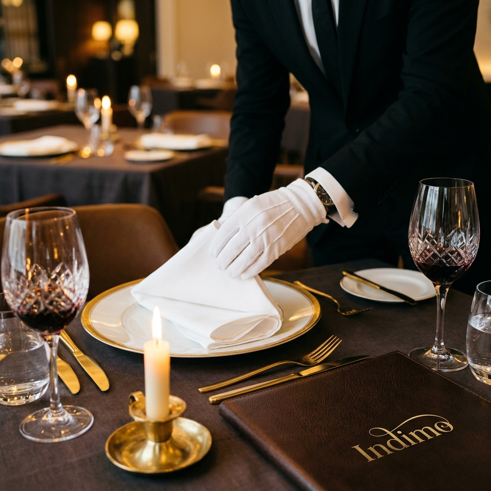
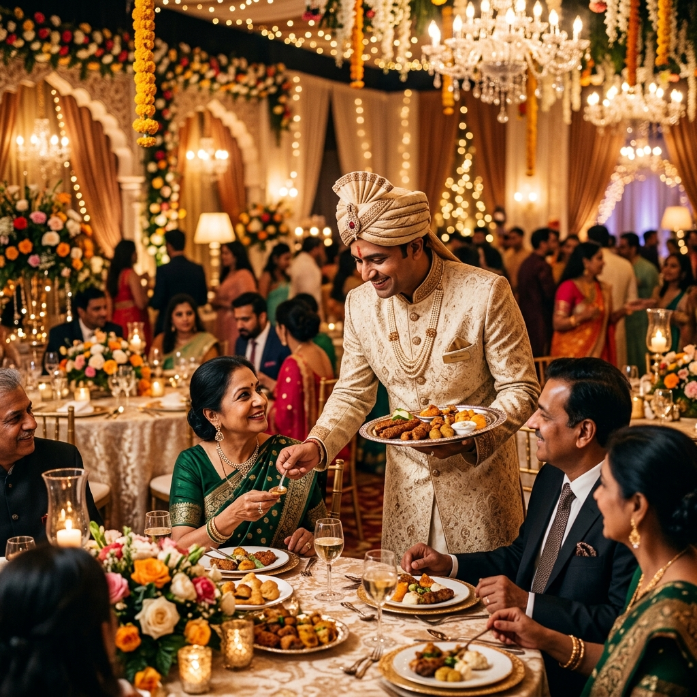

The World's Street Food,
Curated For Extraordinary
Celebrations.
"The best way to deliver the immense love to our guests is by serving them with warmth & affection."
A Journey Across India's Street Food Heritage
From the sacred ghats of Banaras to the coastal energy of Mumbai — each region on our map tells a story through flavour.
Classic Delhi Tales
Delhi is a food lover's paradise — a muddled mix of cultures. Experience our modern vegetable griddle creations and comforting street fries served under a cloud of herb smoke.
Flavors of Agra
Reflecting the grand spirit of the Taj Mahal — saffron-infused yogurt cakes, dry-fruit Makhanas, and crisp tawa chillas from Agra's rich heritage.
Rajasthani Heritage
Influenced by royal fort lifestyles and desert ingredients. Lentil baskets, fermented mustard curries, and hand-crushed papad churi.
The Holy City of Haridwar
Simple yet unique street creations. Our signature Urad Dal Gujiyas soaked in sweet chilled curd, garnished live with pomegranate jewels and ginger juliennes.
Smart City Indore
Indore's legendary late-night food markets. Bhutte Ki Khees — a fresh sweet-corn grated pudding — alongside double-fried yams and crunchy sago tosses.
Mumbai Chowpatty
The vibrant seaside energy of Mumbai's coast. Hand-pressed potato dumplings in buttered buns, rich vegetable curries cooked on giant iron tawas.
Gujarat Chronicles
A delicate balance of sweet, spicy, and sour. Panki steamed in fresh banana leaves, and soft fluffy Dhoklas elevated into a refreshing chaat.
Moradabad Dal Craft
Heavy regional focus on moong lentil flavors. Our famous Moradabadi Dal — a creamy blend of yellow lentils seasoned with butter, cumin, and mint chutney.
Banarasi Chatkara
Tangy, spicy, and deeply comforting. Crisp chickpea-stuffed kachoris in kulhads, hot papad cones, and milk-soaked green pea poha.
Kolkata Street Collective
The City of Joy offers unmatched flavour profiles. Hollow puchka shells with sour tamarind and sweet mint water, and fresh puffed rice tossed with raw mustard oil.
Signature Popup Restaurants
We bring trendsetting dining formats to your celebrations, transforming venues into active gourmet hubs.

The Spice Cube
A high-concept installation focusing on Indian spices — freshly toasted griddle wraps and regional dry curries.

The Oriental Kitchen
An interactive revolving magnet rail moving dim sums and customized gyozas live in front of your guests.

Classic Italiano
Pizzerias with hand-tossed thin crusts in dome stone ovens, and fresh raviolis swirled inside giant Parmesan cheese wheels.

Al-Habibi
Bespoke Mediterranean & Levantine setups — fresh pita pockets, charred pineapples, and gourmet hummus stations.

Rottisattva
A dedicated flatbread gallery — tandoori rotis, biscuit bhakhris, and layered paranthas made live.
A Narrative in Fine Art
"We paint a canvas of collective memories. Street food is a living, breathing theatrical heritage — we refine it with culinary science and absolute hospitality reverence."
Under the curation of Somansh Girdhar, our signature menus pair regional Indian street flavours with avant-garde tablescapes, custom lighting, and bespoke catering concepts.
Read Our StorySomansh Girdhar
21st-Century Kitchen Infrastructure
Our commercial modular kitchen complies with the highest standards of international hygiene and quality. Ergonomically designed to minimize staff movement and maximize safety — featuring specialized cooling chambers, hot-holding galleries, and a comprehensive Food Safety Management System.
Read Infrastructure Story
Tailored For Uncompromising Audiences
From private villas to luxury wedding pavilions and high-concept product launches — every menu, table landscape, and live station setting is custom-designed.

Destination Weddings
An immersive, romantic dining experience tailored for couples seeking to tell their love story through global street flavours.

Corporate & Brands
Avant-garde food styling, brand-aligned elements, and minimal setups for luxury product launches and gallery openings.
Ready to experience Indimo?
Share your date, location, and vision with our curation studio — and we will prepare a bespoke blueprint for your review.
Plan An Event